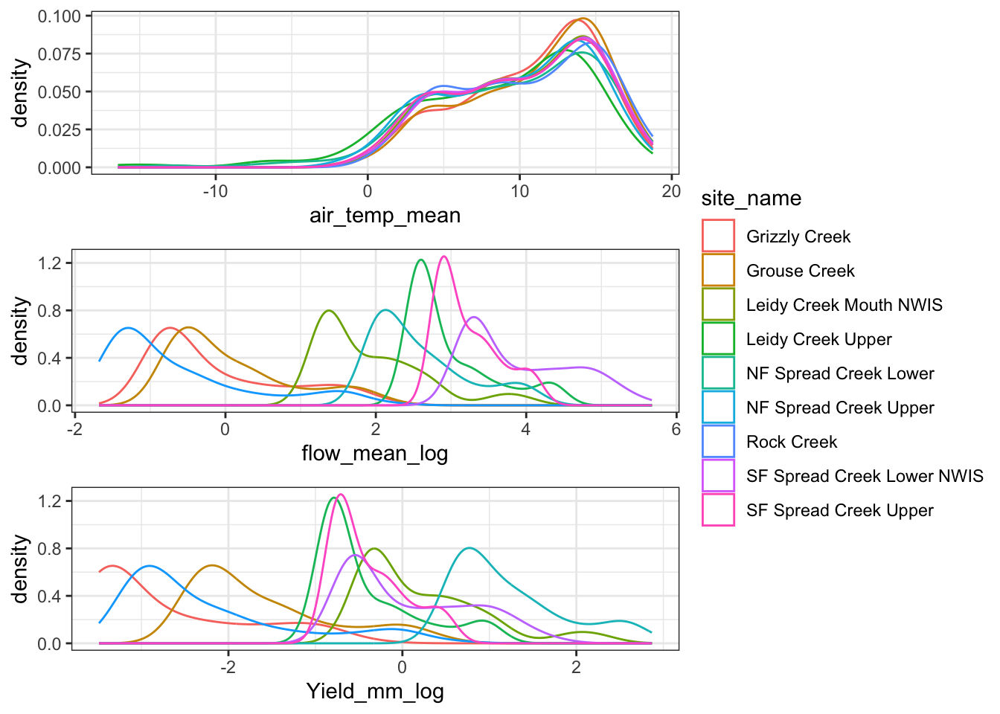
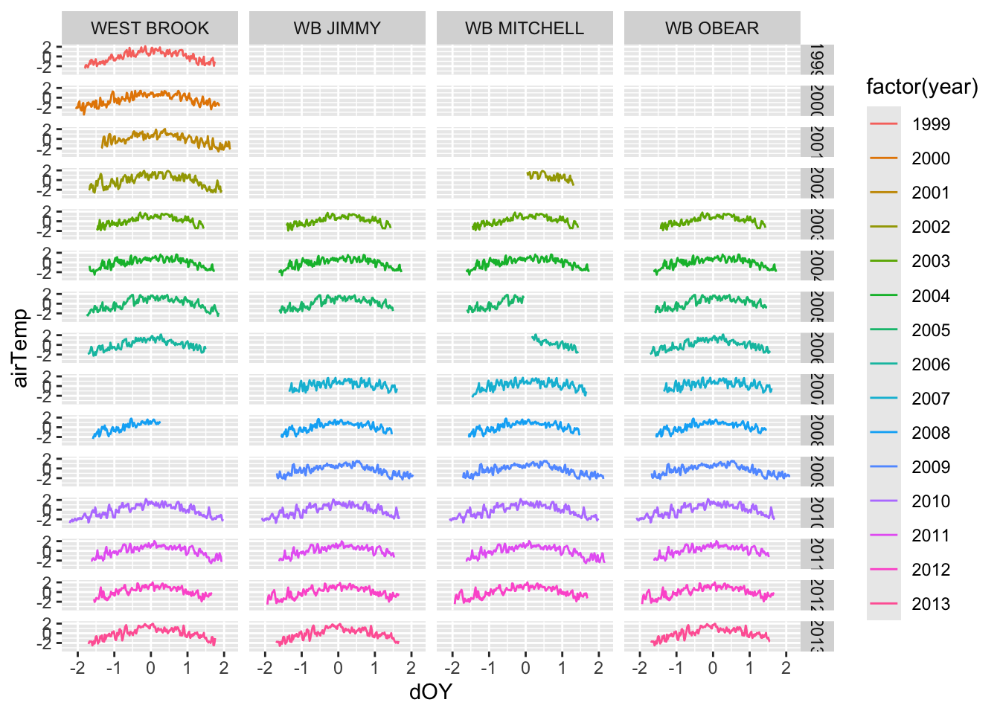
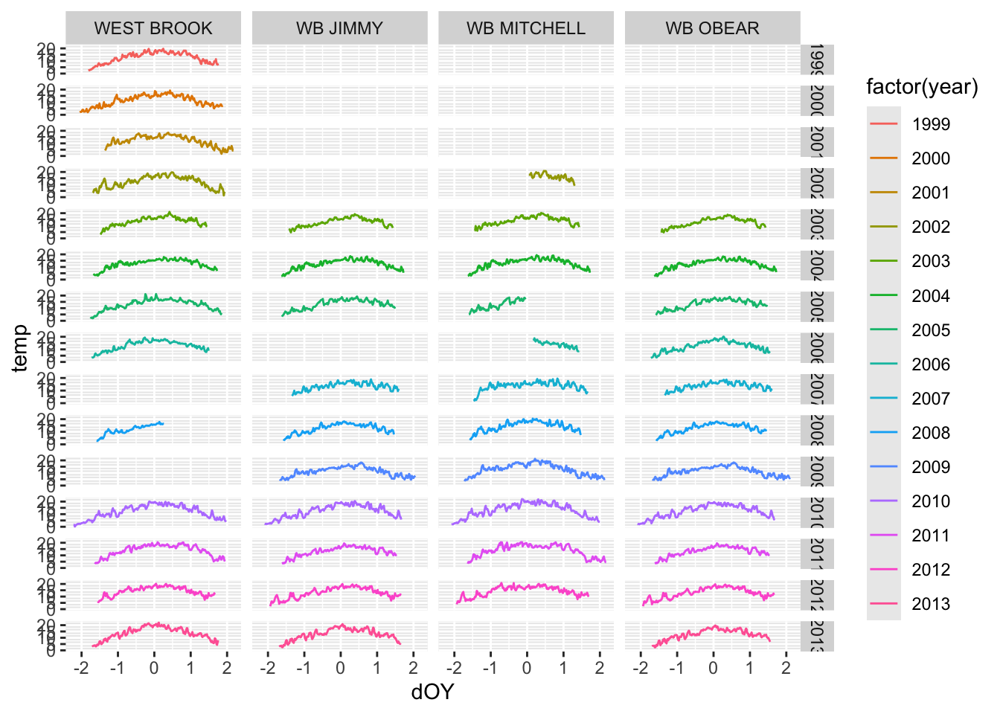
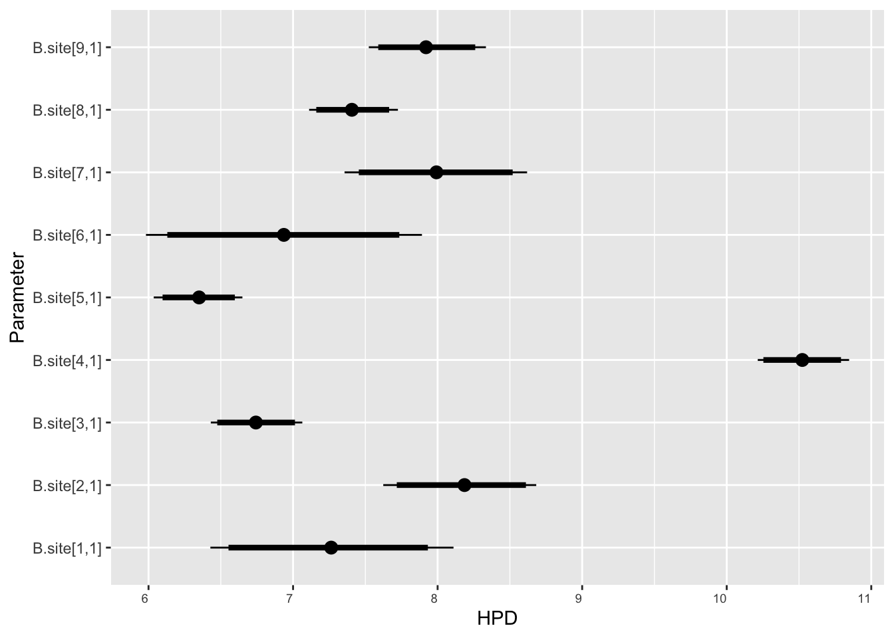
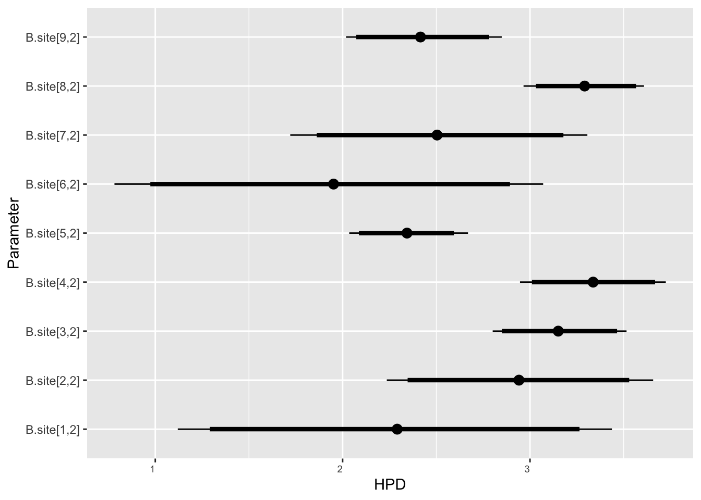
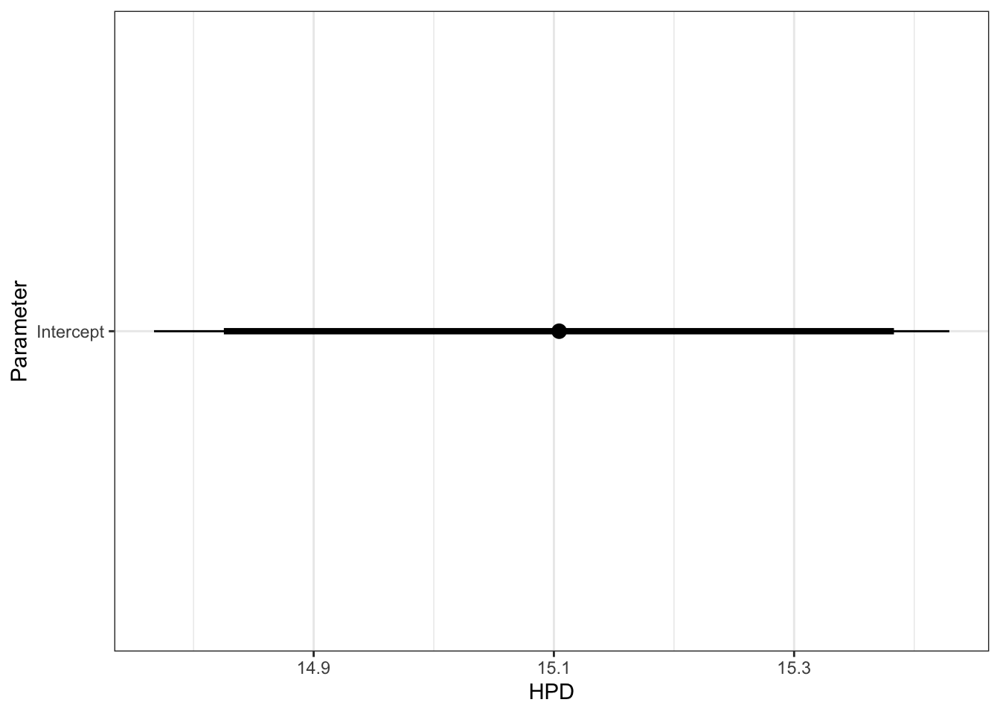

Restrict to West Brook, and standardize flow by site (not sure we actually want to do this, but for just for now, to repeat Ben’s work). Also set flow = NA to 0. Probably should change this to latent variable in model, especially when expanding to sites where flow data is more rare
ggpubr::ggarrange(dat%>%ggplot(aes(x =air_temp_mean, color =site_name))+geom_density()+theme_bw(),dat%>%ggplot(aes(x =flow_mean_log, color =site_name))+geom_density()+theme_bw(),dat%>%ggplot(aes(x =Yield_mm_log, color =site_name))+geom_density()+theme_bw(), common.legend =TRUE, legend ="right", ncol =1)

Code
dat%>%ggplot()+geom_line(aes(date, air_temp_mean), color ="red")+geom_line(aes(date, tempc_mean))+geom_line(aes(date, z_Yield_mm_log*10), color ='blue')+facet_wrap(~site_name)

Code
dat%>%filter(z_Yield_mm_log!=0)%>%ggplot(aes(x =z_air_temp_mean, y =z_Yield_mm_log))+geom_point()+ggpubr::stat_cor(method ="pearson", label.x.npc =0, label.y.npc =0.1)+facet_wrap(~site_name)

5.2 Specify JAGS model
Specify model following Letcher et al. (2016). MODIFIED
Code
cat("model { ###----------------- LIKELIHOOD -----------------### # Days without an observation on the previous day (first observation in a series) # No autoregressive term for (i in 1:n){ temp[i] ~ dnorm(stream.mu[i], pow(sigma, -2)) stream.mu[i] <- trend[i] trend[i] <- inprod(B.site[site[i], ], X.site[i, ]) #flow[firstObsRows[i]] ~ dnorm(0, pow(10, -2)) } # for (i in 1:nFirstObsRows){ # temp[firstObsRows[i]] ~ dnorm(stream.mu[firstObsRows[i]], pow(sigma, -2)) # stream.mu[firstObsRows[i]] <- trend[firstObsRows[i]] # trend[firstObsRows[i]] <- inprod(B.0[], X.0[firstObsRows[i], ]) + inprod(B.site[site[firstObsRows[i]], ], X.site[firstObsRows[i], ]) #+ inprod(B.year[year[firstObsRows[i]], ], X.year[firstObsRows[i], ]) # # #flow[firstObsRows[i]] ~ dnorm(0, pow(10, -2)) # } # # # Days with an observation on the previous dat (all days following the first day) # # Includes autoregressive term (ar1) # # for (i in 1:nEvalRows){ # temp[evalRows[i]] ~ dnorm(stream.mu[evalRows[i]], pow(sigma, -2)) # stream.mu[evalRows[i]] <- trend[evalRows[i]] + ar1[site[evalRows[i]]] * (temp[evalRows[i]-1] - trend[ evalRows[i]-1 ]) # trend[evalRows[i]] <- inprod(B.0[], X.0[evalRows[i], ]) + inprod(B.site[site[evalRows[i]], ], X.site[evalRows[i], ]) #+ inprod(B.year[year[evalRows[i]], ], X.year[evalRows[i], ]) # # #flow[evalRows[i]] ~ dnorm(0, pow(10, -2)) # } ###----------------- PRIORS ---------------------### # # ar1, hierarchical by site # for (i in 1:nSite){ # ar1[i] ~ dnorm(ar1Mean, pow(ar1SD,-2) ) T(-1,1) # } # ar1Mean ~ dunif( -1,1 ) # ar1SD ~ dunif( 0, 2 ) # model variance sigma ~ dunif(0, 100) # fixed effect coefficients for (k in 1:nFixedCovs) { B.0[k] ~ dnorm(0, pow(100, -2)) } # SITE EFFECTS for (k in 1:nRandCovs) { for (i in 1:nSite) { B.site[i,k] ~ dnorm(0, pow(10, -2)) } } # # YEAR EFFECTS # # Priors for random effects of year # for (t in 1:Ti) { # Ti years # B.year[t, 1:L] ~ dmnorm(mu.year[ ], tau.B.year[ , ]) # } # # mu.year[1] <- 0 # # for (l in 2:L) { # mu.year[l] ~ dnorm(0, 0.0001) # } # # # Prior on multivariate normal std deviation # tau.B.year[1:L, 1:L] ~ dwish(W.year[ , ], df.year) # df.year <- L + 1 # sigma.B.year[1:L, 1:L] <- inverse(tau.B.year[ , ]) # for (l in 1:L) { # for (l.prime in 1:L) { # rho.B.year[l, l.prime] <- sigma.B.year[l, l.prime]/sqrt(sigma.B.year[l, l]*sigma.B.year[l.prime, l.prime]) # } # sigma.b.year[l] <- sqrt(sigma.B.year[l, l]) # } ###----------------- DERIVED VALUES -------------### # residuals # residuals[1] <- 0 # hold the place. Not sure if this is necessary... for (i in 1:n) { residuals[i] <- temp[i] - stream.mu[i] } # variance of model predictions (fixed + random effects) var_fit <- (sd(stream.mu))^2 # residual variance var_res <- (sd(residuals))^2 # calculate Bayesian R^2 R2 <- var_fit / (var_fit + var_res) # Root mean squared error rmse <- sqrt(mean(residuals[]^2)) }", file ="DailyTempModelJAGS_mod.txt")
Straight from Letcher et al (2016)
Code
cat("model { ###----------------- LIKELIHOOD -----------------### # Days without an observation on the previous day (first observation in a series) # No autoregressive term for (i in 1:nFirstObsRows){ temp[firstObsRows[i]] ~ dnorm(stream.mu[firstObsRows[i]], pow(sigma, -2)) stream.mu[firstObsRows[i]] <- trend[firstObsRows[i]] trend[firstObsRows[i]] <- inprod(B.0[], X.0[firstObsRows[i], ]) + inprod(B.year[year[firstObsRows[i]], ], X.year[firstObsRows[i], ]) } # Days with an observation on the previous dat (all days following the first day) # Includes autoregressive term (ar1) for (i in 1:nEvalRows){ temp[evalRows[i]] ~ dnorm(stream.mu[evalRows[i]], pow(sigma, -2)) stream.mu[evalRows[i]] <- trend[evalRows[i]] + ar1[river[evalRows[i]]] * (temp[evalRows[i]-1] - trend[ evalRows[i]-1 ]) trend[evalRows[i]] <- inprod(B.0[], X.0[evalRows[i], ]) + inprod(B.year[year[evalRows[i]], ], X.year[evalRows[i], ]) } ###----------------- PRIORS ---------------------### # ar1, hierarchical by site for (i in 1:nRiver){ ar1[i] ~ dnorm(ar1Mean, pow(ar1SD,-2) ) T(-1,1) } ar1Mean ~ dunif( -1,1 ) ar1SD ~ dunif( 0, 2 ) # model variance sigma ~ dunif(0, 100) # fixed effect coefficients for (k in 1:K.0) { B.0[k] ~ dnorm(0, 0.001) } # YEAR EFFECTS # Priors for random effects of year for (t in 1:Ti) { # Ti years B.year[t, 1:L] ~ dmnorm(mu.year[ ], tau.B.year[ , ]) } mu.year[1] <- 0 for (l in 2:L) { mu.year[l] ~ dnorm(0, 0.0001) } # Prior on multivariate normal std deviation tau.B.year[1:L, 1:L] ~ dwish(W.year[ , ], df.year) df.year <- L + 1 sigma.B.year[1:L, 1:L] <- inverse(tau.B.year[ , ]) for (l in 1:L) { for (l.prime in 1:L) { rho.B.year[l, l.prime] <- sigma.B.year[l, l.prime]/sqrt(sigma.B.year[l, l]*sigma.B.year[l.prime, l.prime]) } sigma.b.year[l] <- sqrt(sigma.B.year[l, l]) } ###----------------- DERIVED VALUES -------------### residuals[1] <- 0 # hold the place. Not sure if this is necessary... for (i in 2:n) { residuals[i] <- temp[i] - stream.mu[i] } }", file ="DailyTempModelJAGS_Letcher.txt")
5.3 Organize objects
Get first observation indices and check that nFirstRowObs equals the number of unique site-years: must be TRUE!
Code
# row indices for first observation in each site-yearfirstObsRows<-unlist(dat%>%group_by(siteYear)%>%summarize(index =rowNum[min(which(!is.na(tempc_mean)))])%>%ungroup()%>%select(index))nFirstObsRows<-length(firstObsRows)# does the number of first observations match the number of site years?nFirstObsRows==length(unique(dat$siteYear))
# fixed effectsdata.fixed<-data.frame(intercept =1,# air temperature airTemp =dat$air_temp_mean, airTempLag1 =dat$air_temp_mean_lag1, airTempLag2 =dat$air_temp_mean_lag2,# flow flow =dat$z_Yield_mm_log,# air temp x flow interaction airFlow =dat$air_temp_mean*dat$z_Yield_mm_log)# random site effects# data.random.sites <- data.frame(intercept.site = 1,# airTemp = dat$air_temp_mean)data.random.sites<-data.frame(intercept.site =1, air =dat$z_air_temp_mean, flow =dat$z_Yield_mm_log, airflow =dat$z_air_temp_mean*dat$z_Yield_mm_log)# random year effectsdata.random.years<-data.frame(intercept.year =1, doy =dat$yday, doy2 =dat$yday^2, doy3 =dat$yday^3)Ti<-length(unique(dat$year))L<-dim(data.random.years)[2]W.year<-diag(L)# combine data in a listjags.data<-list("temp"=dat$tempc_mean,"nFirstObsRows"=nFirstObsRows,"firstObsRows"=firstObsRows,"nEvalRows"=nEvalRows,"evalRows"=evalRows,"X.0"=data.fixed,"X.site"=data.random.sites,"X.year"=data.random.years,"nFixedCovs"=dim(data.fixed)[2],"nRandCovs"=dim(data.random.sites)[2],"site"=dat$site_code,"year"=dat$year_code,"nSite"=length(unique(dat$site_code)),"Ti"=Ti,"L"=L,"W.year"=W.year,"n"=dim(dat)[1])
Compiling model graph
Resolving undeclared variables
Allocating nodes
Graph information:
Observed stochastic nodes: 1066
Unobserved stochastic nodes: 547
Total graph size: 14190
Initializing model
Get MCMC samples and summary
Code
top_mod<-fit2# generate MCMC samples and store as an arraymodelout<-top_mod$BUGSoutputMcmcList<-vector("list", length =dim(modelout$sims.array)[2])for(iin1:length(McmcList)){McmcList[[i]]=as.mcmc(modelout$sims.array[,i,])}# rbind MCMC samples from 10 chains Mcmcdat<-rbind(McmcList[[1]], McmcList[[2]], McmcList[[3]])param.summary<-modelout$summaryhead(param.summary)
ggs_caterpillar(ggfit%>%filter(Parameter%in%grep(glob2rx("B.site*1]"), myparams, value =TRUE)), sort =FALSE)

Code
ggs_caterpillar(ggfit%>%filter(Parameter%in%grep(glob2rx("B.site*2]"), myparams, value =TRUE)), sort =FALSE)

Code
ggs_caterpillar(ggfit%>%filter(Parameter%in%grep(glob2rx("B.site*3]",), myparams, value =TRUE)), sort =FALSE)+xlim(-5,5)
Code
ggs_caterpillar(ggfit%>%filter(Parameter%in%grep(glob2rx("B.site*4]"), myparams, value =TRUE)), sort =FALSE)+xlim(-2.5,2.5)

Interaction heat maps
Source Code
---title: "ModelTemp"---**Purpose:**```{r include=FALSE}library(tidyverse)library(R2jags)library(MCMCvis)library(loo)library(HDInterval)library(scales)library(ggmcmc)library(GGally)```## Load dataRestrict to West Brook, and standardize flow by site (not sure we actually want to do this, but for just for now, to repeat Ben's work). Also set flow = NA to 0. Probably should change this to latent variable in model, especially when expanding to sites where flow data is more rare```{r}dat <-read_csv("data/EcoDrought_FlowTempData_formatted.csv") %>%filter(basin =="Snake River", year ==2020) %>%mutate(Yield_mm_log =log(Yield_mm +0.00001),flow_mean_log =log(flow_mean +0.00001),rowNum =1:nrow(.)) %>%#group_by(site_name) %>%mutate(z_Yield_mm_log =scale(Yield_mm_log, center =TRUE, scale =TRUE),z_air_temp_mean =scale(air_temp_mean, center =TRUE, scale =TRUE)) %>%#ungroup() %>%mutate(z_Yield_mm_log =ifelse(is.na(z_Yield_mm_log), 0, z_Yield_mm_log),site_code =as.numeric(as.factor(site_name)),year_code = year -min(year) +1) dat```View data::: panel-tabset#### Distributions```{r}ggpubr::ggarrange(dat %>%ggplot(aes(x = air_temp_mean, color = site_name)) +geom_density() +theme_bw(), dat %>%ggplot(aes(x = flow_mean_log, color = site_name)) +geom_density() +theme_bw(), dat %>%ggplot(aes(x = Yield_mm_log, color = site_name)) +geom_density() +theme_bw(),common.legend =TRUE, legend ="right", ncol =1)```#### Time series```{r}dat %>%ggplot() +geom_line(aes(date, air_temp_mean), color ="red") +geom_line(aes(date, tempc_mean)) +geom_line(aes(date, z_Yield_mm_log*10), color ='blue') +facet_wrap(~site_name)```#### Air temp x Flow```{r}dat %>%filter(z_Yield_mm_log !=0) %>%ggplot(aes(x = z_air_temp_mean, y = z_Yield_mm_log)) +geom_point() + ggpubr::stat_cor(method ="pearson", label.x.npc =0, label.y.npc =0.1) +facet_wrap(~site_name)```:::## Specify JAGS modelSpecify model following Letcher et al. (2016). MODIFIED```{r}cat("model { ###----------------- LIKELIHOOD -----------------### # Days without an observation on the previous day (first observation in a series) # No autoregressive term for (i in 1:n){ temp[i] ~ dnorm(stream.mu[i], pow(sigma, -2)) stream.mu[i] <- trend[i] trend[i] <- inprod(B.site[site[i], ], X.site[i, ]) #flow[firstObsRows[i]] ~ dnorm(0, pow(10, -2)) } # for (i in 1:nFirstObsRows){ # temp[firstObsRows[i]] ~ dnorm(stream.mu[firstObsRows[i]], pow(sigma, -2)) # stream.mu[firstObsRows[i]] <- trend[firstObsRows[i]] # trend[firstObsRows[i]] <- inprod(B.0[], X.0[firstObsRows[i], ]) + inprod(B.site[site[firstObsRows[i]], ], X.site[firstObsRows[i], ]) #+ inprod(B.year[year[firstObsRows[i]], ], X.year[firstObsRows[i], ]) # # #flow[firstObsRows[i]] ~ dnorm(0, pow(10, -2)) # } # # # Days with an observation on the previous dat (all days following the first day) # # Includes autoregressive term (ar1) # # for (i in 1:nEvalRows){ # temp[evalRows[i]] ~ dnorm(stream.mu[evalRows[i]], pow(sigma, -2)) # stream.mu[evalRows[i]] <- trend[evalRows[i]] + ar1[site[evalRows[i]]] * (temp[evalRows[i]-1] - trend[ evalRows[i]-1 ]) # trend[evalRows[i]] <- inprod(B.0[], X.0[evalRows[i], ]) + inprod(B.site[site[evalRows[i]], ], X.site[evalRows[i], ]) #+ inprod(B.year[year[evalRows[i]], ], X.year[evalRows[i], ]) # # #flow[evalRows[i]] ~ dnorm(0, pow(10, -2)) # } ###----------------- PRIORS ---------------------### # # ar1, hierarchical by site # for (i in 1:nSite){ # ar1[i] ~ dnorm(ar1Mean, pow(ar1SD,-2) ) T(-1,1) # } # ar1Mean ~ dunif( -1,1 ) # ar1SD ~ dunif( 0, 2 ) # model variance sigma ~ dunif(0, 100) # fixed effect coefficients for (k in 1:nFixedCovs) { B.0[k] ~ dnorm(0, pow(100, -2)) } # SITE EFFECTS for (k in 1:nRandCovs) { for (i in 1:nSite) { B.site[i,k] ~ dnorm(0, pow(10, -2)) } } # # YEAR EFFECTS # # Priors for random effects of year # for (t in 1:Ti) { # Ti years # B.year[t, 1:L] ~ dmnorm(mu.year[ ], tau.B.year[ , ]) # } # # mu.year[1] <- 0 # # for (l in 2:L) { # mu.year[l] ~ dnorm(0, 0.0001) # } # # # Prior on multivariate normal std deviation # tau.B.year[1:L, 1:L] ~ dwish(W.year[ , ], df.year) # df.year <- L + 1 # sigma.B.year[1:L, 1:L] <- inverse(tau.B.year[ , ]) # for (l in 1:L) { # for (l.prime in 1:L) { # rho.B.year[l, l.prime] <- sigma.B.year[l, l.prime]/sqrt(sigma.B.year[l, l]*sigma.B.year[l.prime, l.prime]) # } # sigma.b.year[l] <- sqrt(sigma.B.year[l, l]) # } ###----------------- DERIVED VALUES -------------### # residuals # residuals[1] <- 0 # hold the place. Not sure if this is necessary... for (i in 1:n) { residuals[i] <- temp[i] - stream.mu[i] } # variance of model predictions (fixed + random effects) var_fit <- (sd(stream.mu))^2 # residual variance var_res <- (sd(residuals))^2 # calculate Bayesian R^2 R2 <- var_fit / (var_fit + var_res) # Root mean squared error rmse <- sqrt(mean(residuals[]^2)) }", file ="DailyTempModelJAGS_mod.txt")```Straight from Letcher et al (2016)```{r}cat("model { ###----------------- LIKELIHOOD -----------------### # Days without an observation on the previous day (first observation in a series) # No autoregressive term for (i in 1:nFirstObsRows){ temp[firstObsRows[i]] ~ dnorm(stream.mu[firstObsRows[i]], pow(sigma, -2)) stream.mu[firstObsRows[i]] <- trend[firstObsRows[i]] trend[firstObsRows[i]] <- inprod(B.0[], X.0[firstObsRows[i], ]) + inprod(B.year[year[firstObsRows[i]], ], X.year[firstObsRows[i], ]) } # Days with an observation on the previous dat (all days following the first day) # Includes autoregressive term (ar1) for (i in 1:nEvalRows){ temp[evalRows[i]] ~ dnorm(stream.mu[evalRows[i]], pow(sigma, -2)) stream.mu[evalRows[i]] <- trend[evalRows[i]] + ar1[river[evalRows[i]]] * (temp[evalRows[i]-1] - trend[ evalRows[i]-1 ]) trend[evalRows[i]] <- inprod(B.0[], X.0[evalRows[i], ]) + inprod(B.year[year[evalRows[i]], ], X.year[evalRows[i], ]) } ###----------------- PRIORS ---------------------### # ar1, hierarchical by site for (i in 1:nRiver){ ar1[i] ~ dnorm(ar1Mean, pow(ar1SD,-2) ) T(-1,1) } ar1Mean ~ dunif( -1,1 ) ar1SD ~ dunif( 0, 2 ) # model variance sigma ~ dunif(0, 100) # fixed effect coefficients for (k in 1:K.0) { B.0[k] ~ dnorm(0, 0.001) } # YEAR EFFECTS # Priors for random effects of year for (t in 1:Ti) { # Ti years B.year[t, 1:L] ~ dmnorm(mu.year[ ], tau.B.year[ , ]) } mu.year[1] <- 0 for (l in 2:L) { mu.year[l] ~ dnorm(0, 0.0001) } # Prior on multivariate normal std deviation tau.B.year[1:L, 1:L] ~ dwish(W.year[ , ], df.year) df.year <- L + 1 sigma.B.year[1:L, 1:L] <- inverse(tau.B.year[ , ]) for (l in 1:L) { for (l.prime in 1:L) { rho.B.year[l, l.prime] <- sigma.B.year[l, l.prime]/sqrt(sigma.B.year[l, l]*sigma.B.year[l.prime, l.prime]) } sigma.b.year[l] <- sqrt(sigma.B.year[l, l]) } ###----------------- DERIVED VALUES -------------### residuals[1] <- 0 # hold the place. Not sure if this is necessary... for (i in 2:n) { residuals[i] <- temp[i] - stream.mu[i] } }", file ="DailyTempModelJAGS_Letcher.txt")```## Organize objectsGet first observation indices and check that nFirstRowObs equals the number of unique site-years: **must be TRUE!**```{r}# row indices for first observation in each site-yearfirstObsRows <-unlist(dat %>%group_by(siteYear) %>%summarize(index = rowNum[min(which(!is.na(tempc_mean)))]) %>%ungroup() %>%select(index))nFirstObsRows <-length(firstObsRows)# does the number of first observations match the number of site years?nFirstObsRows ==length(unique(dat$siteYear))```Get row indices for all other observations```{r}evalRows <-unlist(dat %>%filter(!rowNum %in% firstObsRows) %>%select(rowNum))nEvalRows <-length(evalRows)```Collate JAGS data in a list```{r}# fixed effectsdata.fixed <-data.frame(intercept =1,# air temperatureairTemp = dat$air_temp_mean,airTempLag1 = dat$air_temp_mean_lag1,airTempLag2 = dat$air_temp_mean_lag2,# flowflow = dat$z_Yield_mm_log,# air temp x flow interactionairFlow = dat$air_temp_mean * dat$z_Yield_mm_log )# random site effects# data.random.sites <- data.frame(intercept.site = 1,# airTemp = dat$air_temp_mean)data.random.sites <-data.frame(intercept.site =1,air = dat$z_air_temp_mean,flow = dat$z_Yield_mm_log,airflow = dat$z_air_temp_mean * dat$z_Yield_mm_log)# random year effectsdata.random.years <-data.frame(intercept.year =1,doy = dat$yday,doy2 = dat$yday^2,doy3 = dat$yday^3)Ti <-length(unique(dat$year))L <-dim(data.random.years)[2]W.year <-diag(L)# combine data in a listjags.data <-list("temp"= dat$tempc_mean,"nFirstObsRows"= nFirstObsRows,"firstObsRows"= firstObsRows,"nEvalRows"= nEvalRows,"evalRows"= evalRows,"X.0"= data.fixed,"X.site"= data.random.sites,"X.year"= data.random.years,"nFixedCovs"=dim(data.fixed)[2],"nRandCovs"=dim(data.random.sites)[2],"site"= dat$site_code,"year"= dat$year_code,"nSite"=length(unique(dat$site_code)),"Ti"= Ti,"L"= L,"W.year"= W.year,"n"=dim(dat)[1])```Parameters to monitor```{r}# parameters to monitorjags.params <-c("B.0", "B.site", "B.year","ar1", "ar1Mean", "ar1SD", "mu.year", "sigma.b.year","sigma", "residuals", "R2", "temp", "stream.mu", "rmse")```## Fit model```{r}fit2 <-jags(data = jags.data, inits =NULL, parameters.to.save = jags.params, model.file ="DailyTempModelJAGS_mod.txt",n.chains =3, n.thin =5, n.burnin =500, n.iter =2500, DIC =TRUE)```Get MCMC samples and summary```{r}top_mod <- fit2# generate MCMC samples and store as an arraymodelout <- top_mod$BUGSoutputMcmcList <-vector("list", length =dim(modelout$sims.array)[2])for(i in1:length(McmcList)) { McmcList[[i]] =as.mcmc(modelout$sims.array[,i,]) }# rbind MCMC samples from 10 chains Mcmcdat <-rbind(McmcList[[1]], McmcList[[2]], McmcList[[3]])param.summary <- modelout$summaryhead(param.summary)```Convert to ggs object```{r}ggfit <-ggs(as.mcmc(top_mod), keep_original_order =TRUE)```## Model diagnostics### ConvergenceAny problematic R-hat values (>1.01)?```{r}top_mod$BUGSoutput$summary[,8][top_mod$BUGSoutput$summary[,8] >1.01]```View traceplots```{r}MCMCtrace(top_mod, ind =TRUE, params =c("B.site", "B.year", #"ar1", "ar1Mean", "ar1SD", "mu.year", "sigma.b.year", "B.0", "sigma", "R2", "rmse"), pdf =FALSE)```### Goodness of fitFormat observed and predicted values```{r}Mcmcdat <-as_tibble(Mcmcdat)# subset expected and observed MCMC samplesppdat_exp <-as.matrix(Mcmcdat[,startsWith(names(Mcmcdat), "stream.mu[")])ppdat_obs <-as.matrix(Mcmcdat[,startsWith(names(Mcmcdat), "temp[")])```Bayesian p-value```{r}sum(ppdat_exp > ppdat_obs) / (dim(ppdat_obs)[1]*dim(ppdat_obs)[2])```::: panel-tabset#### PP-check```{r}ppdat_obs_mean <-apply(ppdat_obs, 2, mean)ppdat_exp_mean <-apply(ppdat_exp, 2, mean)tibble(obs = ppdat_obs_mean, exp = ppdat_exp_mean) %>%ggplot(aes(x = obs, y = exp)) +geom_point(alpha =0.1) +# geom_smooth(method = "lm") +geom_abline(intercept =0, slope =1, color ="red") +theme_bw() +theme(panel.grid =element_blank()) +xlab("Observed") +ylab("Predicted")```#### RMSE```{r}mean(unlist(ggfit %>%filter(Parameter =="rmse") %>%select(value)))ggs_density(ggfit, "rmse") ```#### R-squared```{r}mean(unlist(ggfit %>%filter(Parameter =="R2") %>%select(value)))ggs_density(ggfit, "R2") +xlim(0,1)```:::## Plot model output```{r}myparams <-unique(ggfit$Parameter)```### Dot plots::: panel-tabset#### Intercepts```{r}ggs_caterpillar(ggfit %>%filter(Parameter %in%grep(glob2rx("B.site*1]"), myparams, value =TRUE)), sort =FALSE)```#### Slopes: air temp.```{r}ggs_caterpillar(ggfit %>%filter(Parameter %in%grep(glob2rx("B.site*2]"), myparams, value =TRUE)), sort =FALSE)```#### Slopes: flow```{r}ggs_caterpillar(ggfit %>%filter(Parameter %in%grep(glob2rx("B.site*3]",), myparams, value =TRUE)), sort =FALSE) +xlim(-5,5)```#### Slopes: air x flow```{r}ggs_caterpillar(ggfit %>%filter(Parameter %in%grep(glob2rx("B.site*4]"), myparams, value =TRUE)), sort =FALSE) +xlim(-2.5,2.5)```:::Interaction heat maps